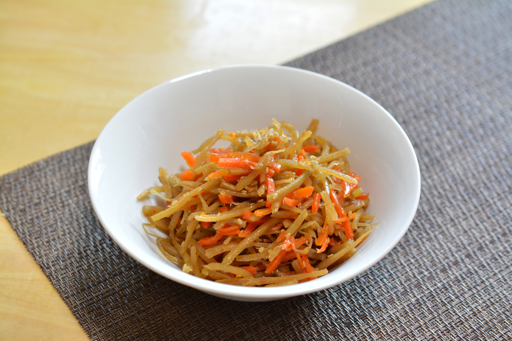

きんぴらごぼう

花粉対策として効果がある、ごぼうを使ったレシピです。これで花粉の季節を乗り切りましょう。
材料（４人分）
テキストテキスト
120g
テキスト
100g
テキスト・テキスト
1個
テキスト
1/3本
テキスト
50g
テキストテキスト
8本
A
水
800ml
A
テキストテキ
２袋
テキ
大さじ３
作り方
テキストテキストテキストテキストテキストテキストテキストテキストテキストテキストテキストテキストテキストテキストテキストテキストテキストテキストテキストテキストテキストテキストテキストテキストテキストテキストテキストテキストテキストテキストテキストテキスト
テキストテキストテキストテキストテキストテキストテキストテキストテキストテキストテキストテキストテキストテキストテキストテキストテキストテキストテキストテキストテキストテキストテキストテキストテキストテキストテキストテキストテキストテキストテキストテキスト
テキストテキストテキストテキストテキストテキストテキストテキストテキストテキストテキストテキストテキストテキストテキストテキストテキストテキストテキストテキストテキストテキストテキストテキストテキストテキストテキストテキストテキストテキストテキストテキスト
栄養情報 （1人分）
・エネルギー
167 kcal
・塩分
1.8g
・たんぱく質
7.4g
・野菜摂取量
55g